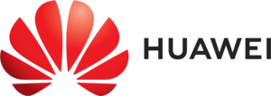

Attending PACT
What's on this page:
Venue
PACT 2022 will be held at the
Discovery Partners Institute
200 South Wacker Drive
Fourth Floor
Chicago, IL 60606
Some sessions will be held at the Illini Center, located on the 19th Floor of 200 South Wacker Drive.
Arrival
200 S. Wacker has building security on the ground floor. Clearing security may take time, especially during high-traffic periods. Please arrive early to avoid having to rush.
Upon arrival, tell them that you are there for PACT 2022, and they should let you through. They also have the names of all registrants on file. In case of trouble, call 401-497-9385.
Transit between DPI and Illini Center (Weekday)
200 S. Wacker does not have any elevators that go directly between the fourth floor (DPI) and the 19th floor (Illini Center).
To go between the fourth and the 19th floor, you should go to the ground floor and walk around the corner in the elevator lobby to access the other elevator bank. (Please no longer use the 16th floor to change.)
Registration
Registration for PACT 2022 is now open.
Registration Rates
Pricing and policy information is reproduced here for convenience, without guarantees of accuracy. See pricing via our registration vendor for authoritative information.
Full Conference
| Registration Type | Early-Bird | Regular |
|---|---|---|
| ACM/IEE Member | $650 | $780 |
| Non-Member | $780 | $940 |
| Student Member | $450 | $550 |
| Student Non-Member | $540 | $660 |
Tutorials/Workshops
| Registration Type | Early-Bird | Regular |
|---|---|---|
| ACM/IEE Member | $350 | $420 |
| Non-Member | $420 | $500 |
| Student Member | $240 | $290 |
| Student Non-Member | $290 | $350 |
Cancellation Policy
If you cancel your attendance on or before September 17, a $150 cancellation fee is due. Cancellations after this date do not receive a refund.
Hotel Bookings
At this moment, there is no specific hotel block for PACT. We recommend using booking portals such as Booking.com, Hotels.com, Hotwire, Expedia or Priceline, etc. If saving money on lodging is a high priority, additional hotels are available near the CTA Blue Line stations Rosemont and Cumberland near O'Hare International Airport, with reasonably convenient access to the conference venue via the Monroe CTA Blue Line stop in the downtown ("Loop") area.
It is useful to note that the Chicago Marathon takes place on October 9, the Sunday before the main conference. IMPORTANT: It may be advantageous to book the night from October 9 to October 10 separately from the remainder of the stay.
Student Travel Awards
PACT 2022 is offering travel support to encourage student participation at the conference through the generous support of IEEE TCPP and TCCA as well as ACM SIGARCH.
Eligibility and Selection Criteria
All current students are eligible to apply. Travel grant award decisions are made based on several factors. Priority will be granted to:
- Students presenting research at the conference (and co-located workshops).
- Students who belong to groups underrepresented at PACT (including women).
- Students from small institutions and universities that do not have a strong tradition of publishing at PACT and related conferences.
- Students who do not have support from their advisors through other grants.
At a Glance
- Application Deadline: October 1, 2022
- Notification Date: October 5, 2022
- Application: Email Travel Grant Chair (see details below)
Reimbursable Expenses
Students may apply for funds covering conference registration, airfare, ground transportation, and lodging only, between the dates October 7 and October 13, 2022. Please note that meals are not eligible for reimbursement. Since the total pot of money is a fixed amount, the amount that can be awarded to each student will depend on the number of awardees, and will cover only a portion of your expenses. Please note that funding is not guaranteed and requires attendance at PACT.
Reimbursement Procedure
To be reimbursed, students will be expected to present original receipts and fill out a travel expense claim form (provided at a later time). It is imperative that you review the receipts to ensure that the proof of payment (e.g. method of payment with last 4 digits of credit card number) is provided on the receipts.
Application Procedure
Please send your travel grant application by the deadline via email to the
Student Travel Grant Chair, Jose Moreira
jmoreira@us.ibm.com. Use the subject line
"PACT 2022 Student Travel Grant Application." The travel grant application
(a single consolidated pdf file) should include:
- A cover page with the name of the student, contact information, and name of the student's institution and advisor, as well as details of membership in an underrepresented group (including women), if applicable.
- A write-up stating the reason for attending PACT and a description of research interests. This should include information about whether the student is presenting work at the conference (or related workshops).
- A letter from the student's advisor confirming the student's eligibility and recommending the student attend PACT.
- A resume (including an IEEE/ACM student membership number if available); no more than 4 pages.
- An estimate of conference-related expenses, including information about other sources of funding available for the conference travel.
Area Restaurants
Some restaurants close to the venue include:
- Willis Tower Food Court featuring Brown Bag Seafood Co., Shake Shack, Sweetgreen, Starbucks, Do-Rite Donuts, Sushi-San, and more. (open weekends)
- Franklin Tap 325 S Franklin St, Chicago, IL 60606 (open weekends)
- Giordanos, 223 W Jackson Blvd, Chicago, IL 60606 (open weekends)
- The Florentine, 151 W Adams St, Chicago, IL 60603 (inside Mariott) (open weekends)
- Rivers Restaurant, 30 S Wacker Dr, Chicago, IL 60606 (closed weekends)
Visa Support Letters
For visa support letters, please contact supportletters@acm.org. All requests are handled in the order they are received. The information below should be included with the request:
- Your name as it appears on your passport
- Your current postal mailing address
- Name of the conference you are registering for, in our case PACT 2022. Only accepted authors may request a visa support letter prior to registering for the conference.
- Your registration confirmation number
If you have any papers accepted for the conference, please provide the title and indicate whether you are the "sole author" or a "co-author"
Authors may indicate their paper title. If no paper, speakers can provide the title of their presentation.
Important Dates and Deadlines
Conference Papers:
Abstracts: April 18, 2022Full Papers: April 25, 2022Round 1 Rebuttal: June 6–9, 2022Round 2 Rebuttal: July 11–14, 2022Author Notification: July 29, 2022Camera Ready Papers: August 26, 2022
Posters:
Poster Submission Deadline: September 1, 2022Author Notification: September 15, 2022Extended Abstract: September 29, 2022Poster Session: October 10, 2022
ACM Student Research Competition:
Abstract Submission Deadline: September 8, 2022Author Notification: September 16, 2022SRC Poster Session: October 11, 2022SRC Finalist Presentations: October 12, 2022
Application Deadline: October 5, 2022
Workshops and Tutorials:
- Workshops/Tutorials: October 8–9, 2022
Conference: October 10–12, 2022
Previous PACTs
- PACT21 (proceedings)
- PACT20 (proceedings)
- PACT19 (proceedings)
- PACT18 (proceedings)
- PACT17 (proceedings)
- PACT16 (proceedings),
- PACT15 (proceedings)
- PACT14 (proceedings)
Earlier PACTs
Sponsors
Platinum

Gold

Supporters


Academic